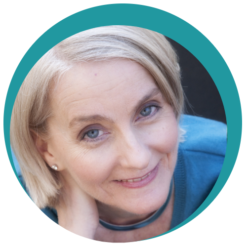
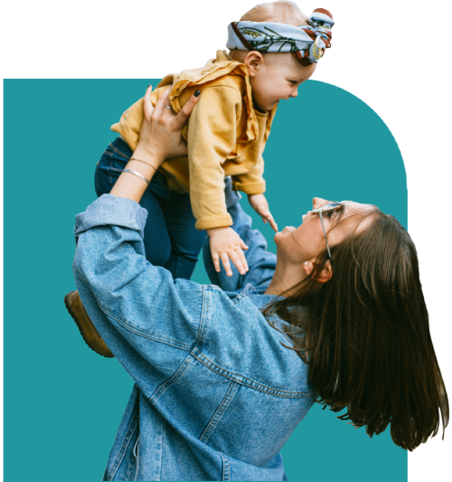
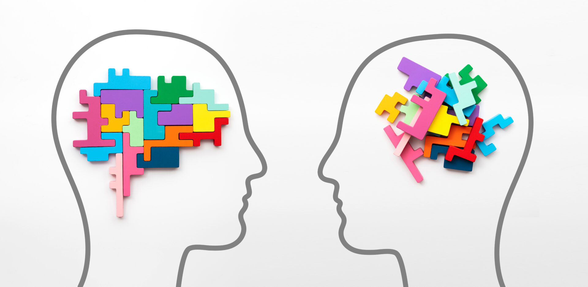

Photo by Laurie Klein
www.laurieklein.com
Meet Dr. Susan Bauerfeld
I am a licensed clinical psychologist with decades of experience, Level 3 IFS training, and a passion for helping parents worry less and connect more with themselves and their children. While retired from private practice, I continue to provide workshops and presentations to community groups and at conferences. My current focus is promoting my book, Base Camp Parenting: Worry Less to Help Your Kids More, co-authored with Chris Parrott, to be published by Bloomsbury in October 2026. With this book, I intend to bring the wisdom and skills I have taught to countless individuals to a wider audience. My goal is to help parents everywhere build the self-management skills they need to imbue their Base Camps with more compassion, curiosity, calmness, and connectedness, and less dismay, disregulation, disintegration, and distress.
I am confident that anyone can become a more resilient, capable, compassionate, and healthy human being. I am also confident that the odds of success in that endeavor are increased when you worry less. Worrying interferes with our most precious resource—our connections with one another—and also makes it harder to address our concerns effectively. When we learn to worry less, therefore, it becomes easier to build and maintain healthy relationships and to cope with a wide range of issues, including anxiety disorders, trauma, learning challenges, technology management, and chronic health conditions.
With parental stress on the rise, along with anxiety and other mental disorders in children, the need for a paradigm shift is clear. It is not enough to understand the value of calmness and connectedness. Parents need hope, courage, and skills to make the changes that will positively transform the environments (i.e., Base Camps) in which children are raised. Worrying less is a powerful, impactful way for parents to help their kids more and to build the foundation for a brighter future. Base Camp Parenting shows them how to do just that.
My Approach
My approach is positive and strength-based. I believe that everyone can learn new skills and make constructive shifts in their lives. When some issues feel bigger or harder to manage than others, I help people gain the knowledge, understanding, skills, and practice they need to handle them with more clarity and confidence. Integrating concepts from Internal Family Systems (IFS), CBT, and interpersonal neurobiology, I strive to cultivate understanding and compassion for the impact of external events on the inner system. The resulting shifts can lead to long-lasting change that feels both manageable and possible.

My Inspiration
My professional focus is heavily influenced by my experiences as a parent. I learned a lot as I stumbled and grew while guiding my three wonderful, diverse boys (now fully launched young adults – phew!) through the challenges of living in a fast-paced, competitive community within a swiftly changing world. As my understanding of parent/child relationships deepened, my passion for teaching parents how to be more connected, calm, and compassionate with their children grew. Use of the IFS model significantly enriched this work. In my current interactions with parents, I strive to help them nurture such a relationship with their children and with their own parts. When they do, they can both heal and cope more effectively with all of life’s many challenges – including raising their children.
Professional Background
Education and Training
- B.A. – Trinity College, Hartford, CT
- M.A. & Ph.D. – Fairleigh Dickinson University, Teaneck, NY
- Internship – Rusk Institute for Rehabilitation Medicine, NYU Medical Center, NY, NY
- Staff Neuropsychologist
- Rusk Institute, NY, NY
- Center for Head Injuries, Edison, NJ
- ADHD Coach Training – JST Coaching
- IFS training – Level 3
- Ongoing continuing education through attendance at conferences and workshops sponsored by the IFS Institute, Learning and the Brain, CHADD, Psychotherapy Networker, and more.
Experience
Prior to opening a private practice, I worked in cognitive rehabilitation settings at Rusk Institute at NYU Medical Center and the Center for Head Injuries at JFK Johnson Rehabilitation Hospital in Edison, New Jersey.
In these settings, I conducted neuropsychological testing, cognitive rehabilitation, and psychotherapy (both individual and group). I supervised other mental health providers and collaborated regularly with treatment teams consisting of other professionals such as:
- Neurologists
- Psychiatrists
- Occupational Therapists
- Social Workers
- Speech Therapists
- Physical Therapists

Private Practice (currently retired)
For more than 13 years, I maintained a private practice in various locations in Fairfield County, CT. The practice focused primarily on delivering psychotherapy and coaching services to adults and teens struggling with the impact of parenting stress, trauma, learning challenges, and anxiety, as well as chronic illness, pain, and head injury. In June of 2024, I retired from providing individual psychotherapy sessions.
Specializations
- Anxiety Management – Currently provided in group settings only to promote the book Base Camp Parenting: Worry Less to Help Your Kids More.
- Parent Skills Training and Coaching – This includes specialized training and support for parents of children and young adults with ADHD. Currently provided solely in group settings, sponsored by community organizations.
- Executive Function/ADHD Coaching – Individuals ages 14 to adult. No longer providing on an individual basis.
- Individual Psychotherapy for Adults – no longer providing.
- Relaxation/Guided Imagery – currently provided only in group settings
Susan in the Media
- How IFS Therapy Promotes Healing from Trauma. ADDitude Magazine. Winter 2025 Issue.
- How to Heal from Trauma Using Internal Family Systems. Webinar sponsored by ADDitude magazine. March 18, 2025.
- Self-Led Parenting with Susan Bauerfeld and Chris Parrott. The One Inside Podcast. October 19, 2024.
- Republican-American Parents Advised to Avoid Knee Jerk Reactions, January 25, 2019
- Wilton Bulletin Managing the College Process, March 12, 2017
- Wilton Bulletin Parent workshop addresses the importance of choice, autonomy, December 1, 2016
- The Hour – Workshop focuses on building parent communication skills, October 21, 2016
- Guest Expert on Impact ADHD, October 10, 2016
- Guest Expert on Tech and Kids, July 16, 2015
- Guest Expert on Impact ADHD, July 14, 2014
- Wilton Bulletin, January 7, 2014
- Guest Expert on Impact ADHD, June 10, 2013
- Wilton Magazine, March/April 2013
*Edward Hallowell, MD
**Byron Katie